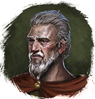

Еда
Предметы / Ресурсы
Открыть в интерактивной вики →
| Вес | 1 |
|---|---|
| Цена | 0 |
Описание
Используется для кормёжки питомцев гильдии.
- Можно получить:
- Выполнив задание у
 Турвиль в Деревне Друидов
Турвиль в Деревне Друидов  80х
80х - Выполнив задание у

Аким в Нижнем Кеменаке 200х - Выполнив задание у
 Берер в Гарнизоне 350х
Берер в Гарнизоне 350х - Обменяв 1x
 Труп вендиго у
Труп вендиго у  Диллег в Кеменаке 200х
Диллег в Кеменаке 200х - Обменяв 1x
 Печень чудовища у
Печень чудовища у  Бродячий торговец в Гарнизоне Дмортера 200х
Бродячий торговец в Гарнизоне Дмортера 200х - Купив у Бродячий торговец за
 Империал 50х, 100x, 150x
Империал 50х, 100x, 150x
| Корм для гильдейских питомцев. |
Применение
|
Способы получения
|
 у Хайне в Трентисе,
у Хайне в Трентисе, у Парвана Разоффа в Трентисе,
у Парвана Разоффа в Трентисе, у Странствующего торговца в Гарнизоне Дмортер (НПС появляется случайно).
у Странствующего торговца в Гарнизоне Дмортер (НПС появляется случайно).